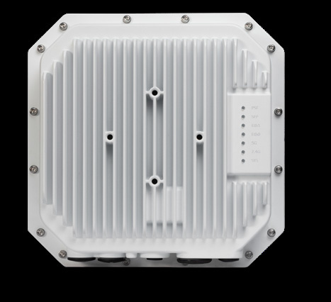

bp-ap1360-datasheet

R（触发场景）
- 室外园区/厂区/港口 Wi-Fi 6 覆盖：全向（1361）/定向补盲（1361D）/外置天线自配增益（1362）三选一（C8）
- 需要 SFP 长距回传 + 下联口给摄像头/ATP 供电的室外点位
- 核对 PSE 下联输出等级与输入 PoE 等级的依赖关系（X9）
I（核心理念)
室外 Wi-Fi 6 全能系列：四射频（5G 4x4 + 2.4G 2x2 + 全频扫描 + BLE 5.1/Zigbee），~3Gbps；上联 2.5GE 多千兆 + SFP 光口长距回传 + GbE 下联 PSE；IP67、-40~65°C、抗 165MPH 阵风。系列内按天线分三形态：1361 内置全向、1361D 内置定向（H80°xV80°）、1362 外置 6x N 头（6KA 防雷）（P7，<<
A1（选型差异）
- 1361 vs 1361D vs 1362：开放区域全向覆盖选 1361；走廊/街面/围墙沿线定向收窄选 1361D；高增益/定制波瓣自配天线选 1362（天线+套件均另购）
- vs AP1561：要 Wi-Fi 7/6GHz 选 1561（9.328G、5GE）；但 1561 无 SFP、无 PSE 下联、无扫描/BLE——要回传+下联供电仍是 1360 独有（C8）
- vs AP1570：1570 = Wi-Fi 7 + 10GE combo SFP+ + 1GE PSE + 扫描 + BLE6，是 1360 的 Wi-Fi 7 对位升级
- vs AP1261：1261 是 11ac 老将，1360 全面替代
A2（规格速查表）
| 项目 | 规格 | 页码 |
|---|---|---|
| 射频架构 | 四射频：5GHz ax 4x4:4（2.4Gbps，4SS HE80）+ 2.4GHz ax 2x2:2（574Mbps）+ 全频 1x1 扫描（内置天线）+ BLE 5.1/Zigbee（18dBm/-93dBm，Zigbee -102dBm） | << |
| 聚合速率 | ~3Gbps（2.4G@5G + 574M@2.4G） | << |
| MIMO/速率档 | HE20/40/80/160(80+80)；DL/UL OFDMA 各 37 RU；MU-MIMO、1024-QAM、TWT、TxBF、ACC | << |
| 以太网口 | ENET0：1x 10/100/1000/2500Mbps（802.3bz）上联，at/bt PoE；ENET1：1x 10/100/1000 下联，PSE 输出最高 at（依输入等级）；另 1x SFP 口 | << |
| PoE/供电 | bt Type4 64W：ENET1 输出 at PSE；bt Type3 46W：ENET1 输出 af；at 24W：ENET1 PSE 与 USB 关；待机 10W（X9） | << |
| USB-IoT | 1x USB 2.0 Type C（5V 1A） | << |
| 蓝牙 | BLE 5.1/Zigbee（内置天线 4.64dBi@1361 / 3.3dBi@1361D、1362） | << |
| 天线 | 1361：全向 H/V 双极化 4.85dBi@2.4G、6.48dBi@5G（BF 增益 7.86/12.5dBi）；1361D：定向 H80°xV80° 7.5dBi@2.4G、7.4dBi@5G；1362：6x N 型母头（ANT0-3=5G，ANT4-5=2.4G），内置 6KA 防雷 | << |
| 发射功率 | 聚合 25dBm@2.4G（每链 22）/ 27dBm@5G（每链 21）；巴西 30dBm 且 5.150-5.350GHz 禁用（X21） | << |
| 工作温度 | -40°C ~ 65°C；存储 -40~85°C；湿度 10-90%；持续风 100MPH/阵风 165MPH | << |
| 防护 | IP67；工业级浪涌保护；UL50 NEMA 4x 盐雾测试 | << |
| Mount | 1361 悬挂（AP-MNT-OUT-H 俯仰套件）；1361D/1362 抱杆/壁装（AP-MNT-OUT）；均另购 | << |
| 容量 | 每射频 16 SSID（总 32）；1024 客户端 | << |
| 尺寸重量 | 243x243x85mm；2500g（1361/1361D）、2684g（1362）；MTBF 1,003,257h（114.5 年） | << |
| 管理平台 | OV2500 4K / Express 集群 256（本系列独有 256 上限）/ Cirrus；SNMPv2+v3 | << |
| 安全 | TPM 2.0、WPA3 CNSA/SAE、Enhanced Open OWE（本代已写为支持）、DPI、wIPS/wIDS、Common Criteria/EAL2 | << |
| 订购 | 1361/1361D/1362 各 -RW（禁 US/Egypt/Japan）/ -ME（Egypt/Israel）/ -US，共 9 SKU；1362 天线与套件另购 | << |
| 配件天线 | ANT-O-M2-5（2 元全向 5/8dBi）、ANT-O-M4-9（4 元 7.5/9dBi）、ANT-O-M6-8（6 元 2x2+4x4 MIMO 6/8dBi）、ANT-S-M6-60-9（定向 9dBi） | << |
E（适用场景）
- 室外开放区全向（1361）/走廊街面定向补盲（1361D）/仓库高增益自配（1362）（C8，<<
>>） - 需要光纤长距回传 + 给下联摄像头等 IoT 供电的点位（SFP + PSE，<<
>>/<< >>） - OWE Enhanced Open 在本代数据表已列为支持（对比 1301/1301H 的"硬件就绪"，X22 演进）
B（限制与坑）
- PSE 下联输出依输入等级：想 ENET1 输出 at 30W，上联必须 bt Type4 64W（X9，<<
>>） - 巴西禁用 5.150-5.350GHz（X21，<<
>>）：巴西项目信道规划避开低段 5G - 1362 天线、全部安装套件另购（X20，<<
>>）；免避雷器的前提是 6KA 内置防雷可靠接地 - Express 集群上限 256（其他型号 255），混部署时按 255 取齐（<<
>>） - 2.4GHz 仅 2x2：2.4G 高密场景不是强项
- Wi-Fi 6 无 6GHz；要 6G 室外看 1561/1570
来源：bp-stellar-ap-datasheets fulltext.md p37-47；verified.md C8/P7/P8/X9/X18/X20/X21/X22/F4/F5
仅供内部学习使用 · 教材版权归 ALE Training Services 所有